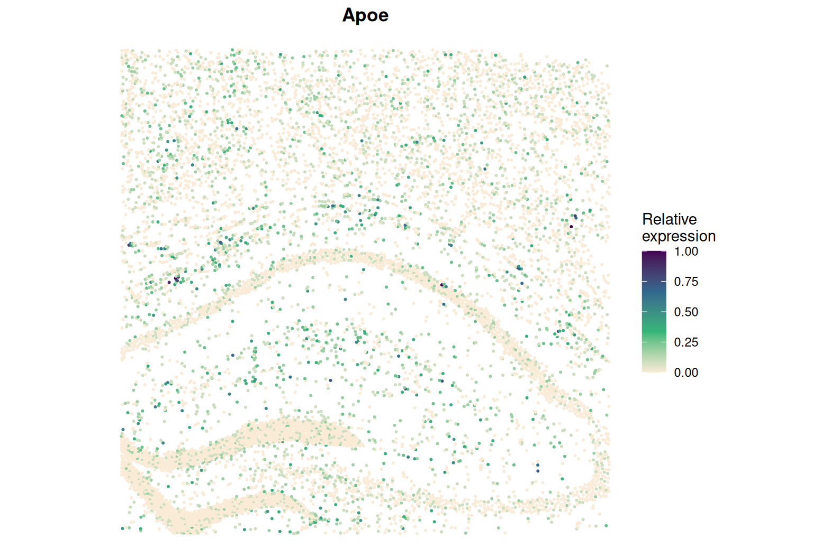
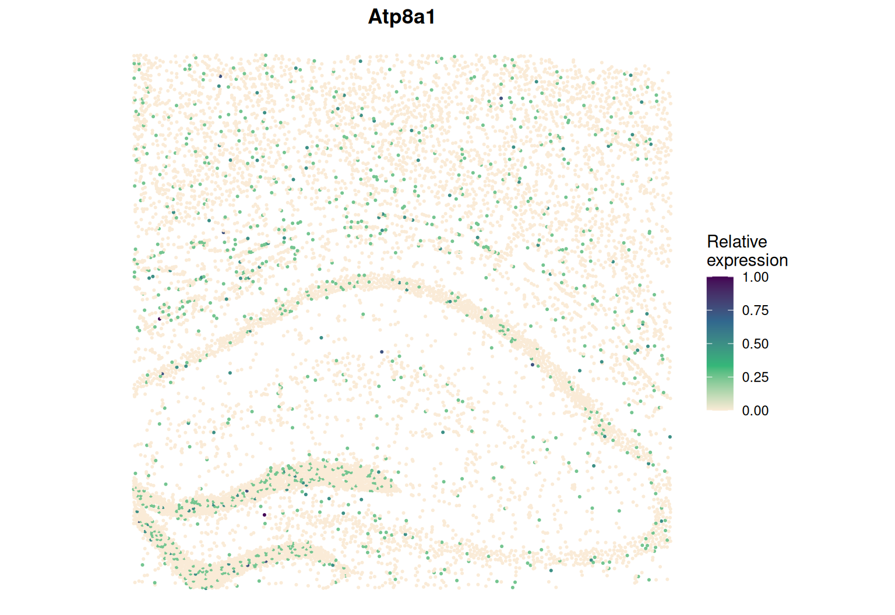

This page analyses spot-level data, where each location has cell-type proportions instead of a single label: STARmap PLUS data of the hippocampus of a 13-month-old Alzheimer’s disease mouse model (Zeng et al., 2023). With more than 6,000 cells it also shows SIGNAL’s settings for large data. To keep the page quick, it runs three genes named in the paper; the analysis of all genes uses the same code.
The processed data used on this page,
starmap_plus_data_use.RData (counts, locations and
cell-type proportions), can be downloaded from the SIGNAL
real data folder on Google Drive. The raw data are sample
spatial_13months-disease-replicate_1 of study SCP1375 on
the Broad Single Cell Portal. Each segmented cell is treated as a
near-cellular spot, and its cell-type composition is estimated by
reference-based deconvolution (CARD with the DropViz mouse hippocampus
reference).
library(SIGNAL)
library(Matrix)
load("starmap_plus_data_use.RData")
dim(data_use$count_use)
#> [1] 2766 9244
prop <- as.matrix(data_use$celltype_proportion)
prop <- prop[, colSums(prop) > 100] # cell types with enough cells
dim(prop)
#> [1] 9244 23
round(prop[1:3, 1:5], 2) # first cells and cell types
#> Interneuron Neuron Entorhinal cortex Deep layer subiculum
#> X29261 0.05 0.00 0.01 0.05
#> X29267 0.00 0.00 0.01 0.00
#> X29268 0.02 0.01 0.01 0.08
#> Entorhinal cortex (IEG)
#> X29261 0.01
#> X29267 0.03
#> X29268 0.03Three genes from the paper: Bin1 and Apoe, Alzheimer’s disease risk genes, and Atp8a1.
genes <- c("Bin1", "Apoe", "Atp8a1")
obj <- createSIGNALobject(data_use$count_use[genes, ], data_use$location_use, prop)
obj
#> SIGNAL object: SIGNAL
#> 3 genes x 9244 cells, 23 cell types
#> Steps run: noneobj <- SIGNAL_preprocess(obj, min_cells = 0, seed = 1)
#> Transforming 3 genes (rank)Two of SIGNAL’s automatic choices apply:
celltype_distance = "auto").approximation = "auto"). Its bandwidth is chosen from the
expression of all genes with Silverman’s rule; with only three genes in
the object, we compute it from the full count matrix and pass it
on.bw <- select_bandwidth(data_use$count_use)
bw
#> [1] 0.03053034
obj <- SIGNAL_kernel(obj, bandwidth = bw)
#> Building one Gaussian spatial kernel for 9244 cells
#> Bandwidth: 0.03053
obj@params$kernel[c("celltype_distance", "approximation")]
#> $celltype_distance
#> [1] "euclidean"
#>
#> $approximation
#> [1] TRUEEach n × n matrix takes 0.68 GB at 9,244 cells; the main process holds about 20 of them and each parallel worker about 7 more. This page ran on a computer with 24 GB of memory, so it uses one worker:
obj <- SIGNAL_test(obj, ncores = 1, verbose = FALSE)
signif(obj@result, 3)
#> p_overall p_celltype p_spatial p_ctSVG
#> Bin1 1.11e-16 1.11e-16 0.62100 6.76e-01
#> Apoe 1.11e-16 1.11e-16 0.00772 9.78e-01
#> Atp8a1 1.11e-16 3.42e-01 0.51800 1.11e-16res <- obj@result
apply(res[, c("p_celltype", "p_spatial", "p_ctSVG")] < 0.05, 1, function(f)
paste(c("CellType", "Spatial", "ctSVG")[f], collapse = "+"))
#> Bin1 Apoe Atp8a1
#> "CellType" "CellType+Spatial" "ctSVG"Memory needed with more workers:
Workers (ncores) |
Memory needed |
|---|---|
| 1 | about 17 GB |
| 8 | about 50 GB |
| 12 | about 70 GB |
| 20 | about 110 GB |
SIGNAL_plotGene(obj, "Apoe", point_size = 0.4)
SIGNAL_plotGene(obj, "Atp8a1", point_size = 0.4)
SIGNAL: Spatial varIable Gene detectioN And cLassification · github.com/TingtHou/SIGNAL